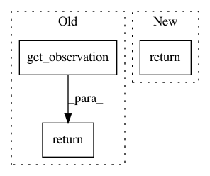

beb1fb180aec3b062f0b007afe049cf22a1bbb1c,osim-rl/env/osim.py,OsimEnv,compute_reward,#OsimEnv#,32
Before Change
return min(x, 2*math.pi-x)
def compute_reward(self):
obs = self.get_observation()
// print (obs[0], obs[1])
up = (2*(math.pi**2) - angular_dist(obs[0],math.pi)**2 - angular_dist(obs[1],0.0)**2)/(2*math.pi**2)
still = (obs[2]**2 + obs[3]**2) / 400
// print still
return up - still
def is_done(self):
return False
After Change
return min(x, 2*math.pi-x)
def compute_reward(self):
return 0.0
def is_done(self):
return False
In pattern: SUPERPATTERN
Frequency: 4
Non-data size: 3
Instances
Project Name: stanfordnmbl/osim-rl
Commit Name: beb1fb180aec3b062f0b007afe049cf22a1bbb1c
Time: 2016-11-16
Author: lukasz.kidzinski@gmail.com
File Name: osim-rl/env/osim.py
Class Name: OsimEnv
Method Name: compute_reward
Project Name: deepmind/dm_control
Commit Name: 86e55b3bc7598a5b899a2e546d8e60366cb228b7
Time: 2019-01-11
Author: stunya@google.com
File Name: dm_control/composer/environment.py
Class Name: Environment
Method Name: reset
Project Name: stanfordnmbl/osim-rl
Commit Name: 83e8db148acc7a2643285ac854ee4ee947510728
Time: 2016-10-29
Author: lukasz.kidzinski@gmail.com
File Name: python/environment.py
Class Name: Environment
Method Name: reset
Project Name: stanfordnmbl/osim-rl
Commit Name: 5524ed3cc7fb7be35d75657a3f8e620ae9a40d1a
Time: 2018-03-24
Author: lukasz.kidzinski@gmail.com
File Name: osim/env/osim.py
Class Name: OsimEnv
Method Name: step